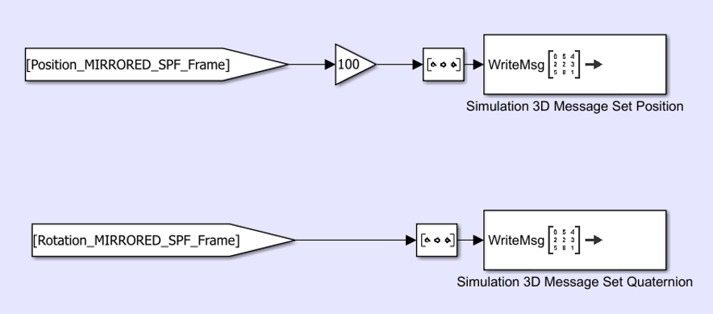
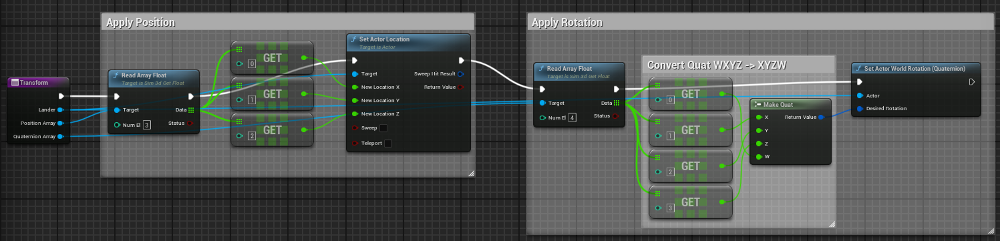
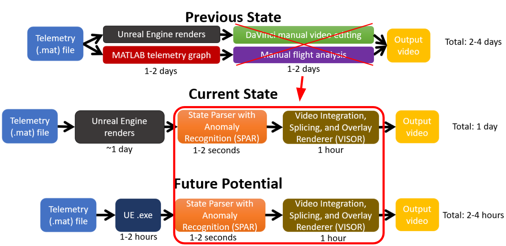
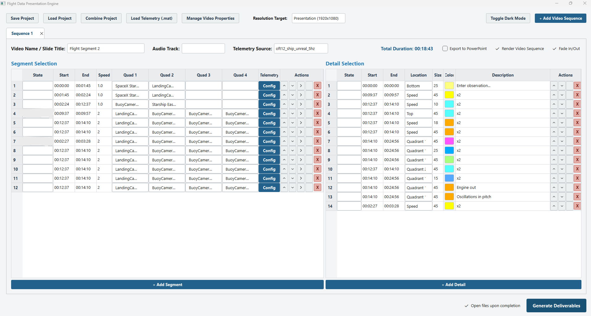

During my engineering internship at NASA Marshall Space Flight Center (MSFC) in Huntsville, AL, I supported the Human Landing System (HLS) program across two primary technical initiatives: advancing Terrain-Relative Navigation (TRN) in-the-loop co-simulation capabilities and engineering automated telemetry analysis pipelines for SpaceX Orbital Flight Tests (OFT). Additionally, I supported MSFC's propulsion branch with Reaction Control System (RCS) thruster sizing evaluations.
Precision lunar landing requires real-time optical matching between onboard descent cameras and digital elevation models. Previously, TRN visualization operated in an offline "Playback Mode," passing static pre-set .csv telemetry files through Python scripts into Unreal Engine to export individual frame sequences.
I helped transition this architecture into a closed-loop Co-Simulation (In-The-Loop) framework (shown in the bottom diagram on the right). By linking the GNC simulation directly to an Unreal Engine executable via a custom Simulink-to-UE block, the system streams state vectors in real time, receives synthetic optical frames back, and dynamically adjusts the landing trajectory during simulation runs.
Tip: Click on any diagram to expand it in full detail.


Notice: Trajectory profiles, terrain elevation models, solar lighting angles, and sensor camera parameters shown in this 35-second demo sequence are strictly generic synthetic models created for public demonstration.
Evaluating flight data from SpaceX Starship test launches historically required a manual 2 to 4 day post-flight process involving separate MATLAB plot generation, video splicing in DaVinci Resolve, and manual state inspection (shown in the top "Previous State" branch of the flowchart).
To streamline this workflow, I engineered an automated processing suite (highlighted inside the red bounding box in the pipeline diagram):
.mat telemetry files in 1–2 seconds to detect state transitions and dynamic flight anomalies.This pipeline reduced total turnaround time down to a single day, establishing a path toward 2–4 hour automated turns via standalone Unreal Engine executables.


In addition to GNC visualization work, I collaborated with MSFC's propulsion branch on preliminary Reaction Control System (RCS) thruster sizing trade studies for deep-space lunar lander attitude control.
My work centered primarily on sizing liquid methane and liquid oxygen (methalox) thruster configurations, evaluating injector orifice geometries, spark torch igniter integration options, feed system pressure drops, and film cooling thermal management. I also performed comparative baseline sizing calculations for hydrolox (liquid hydrogen / liquid oxygen) attitude thruster architectures to evaluate mass-efficiency trade-offs across extended vacuum stay times.
Phone: (936) 900-3932
Email: brycerichristensen@gmail.com
LinkedIn: linkedin.com/in/brycerichristensen